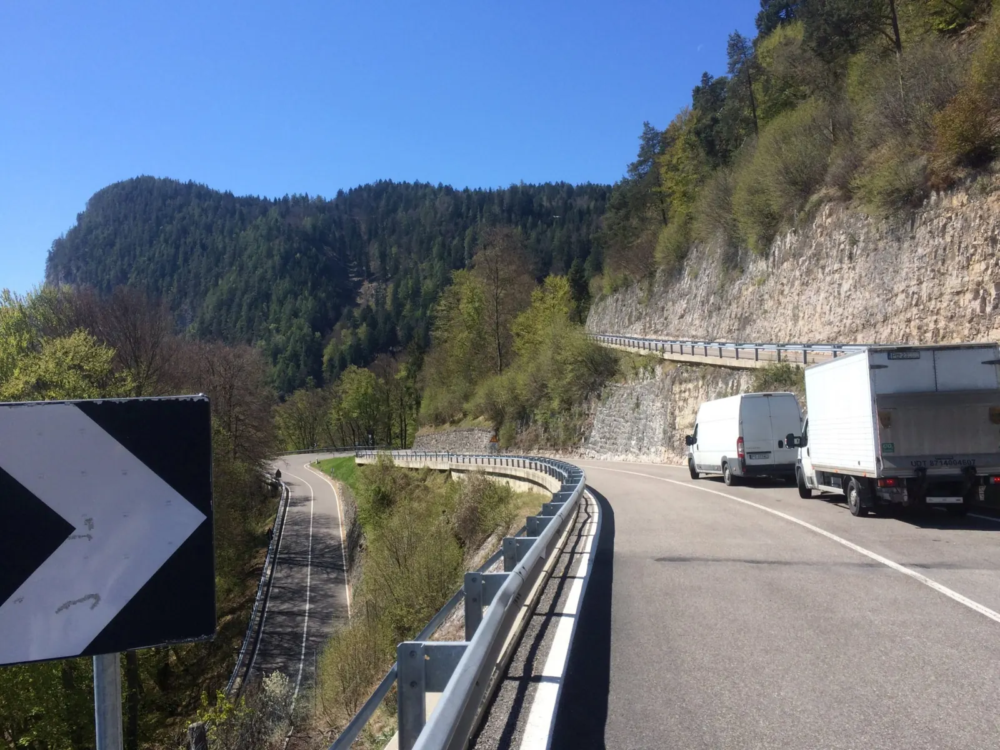
Przeprowadzki Poznań, krajowe i zagraniczne
Twoje rzeczy jadą od drzwi do drzwi jednym autem, bez pośredników i przeładunków. Z Poznania po całej Polsce i Europie.
Pon.-pt. 8:00-21:00, sob.-niedz. 8:00-18:00
Od Twoich drzwi do nowych drzwi
Działamy w systemie door-to-door. Przez całą drogę rzeczy są wyłącznie pod naszą opieką, a wyjątkiem są tylko celnicy na granicy.
Wycena i plan
Bezpłatna wycena, a w większych miastach także oględziny na miejscu.
Pakowanie
Kartony, koce, folie, szafy ubraniowe i pojemniki na kaucję.
Załadunek
Znoszenie, demontaż mebli i zabezpieczenie ładunku w aucie.
Przewóz
Naszym autem z windą, bez spedycji i przeładunków po drodze.
Na miejscu
Wniesienie, montaż i ustawienie tam, gdzie wskażesz.
Co przewozimy
Od jednej szafy po całą firmę. Dobieramy auto do ilości rzeczy, żeby nie płacić za puste miejsce.
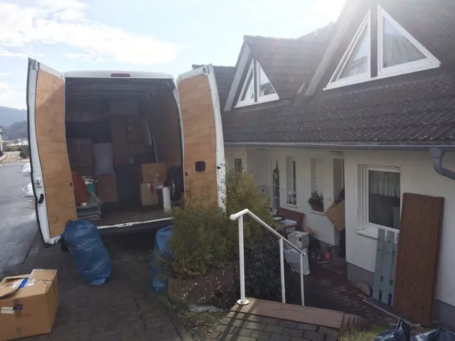
Mieszkania i domy
Przeprowadzki w Poznaniu i między miastami, z wnoszeniem i znoszeniem.
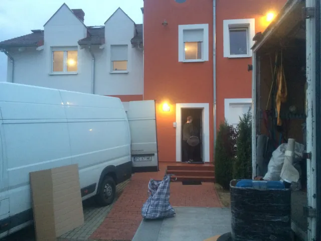
Firmy i biura
Przeprowadzki małych i dużych firm, także z magazynowaniem w Polsce i Europie.
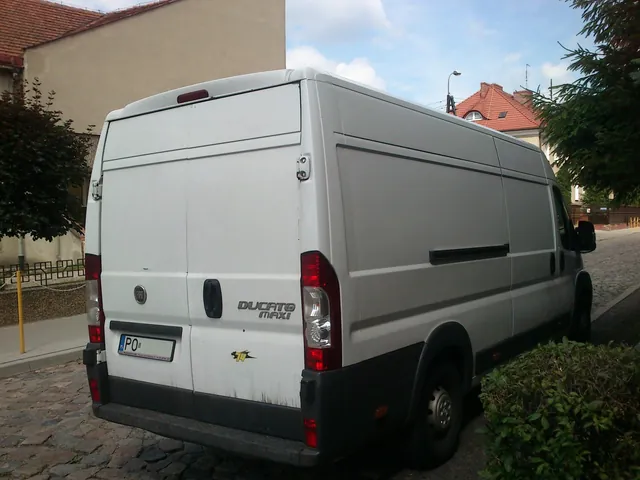
Taxi bagażowe
Auto z kierowcą podstawiamy w 15-45 minut od zamówienia.
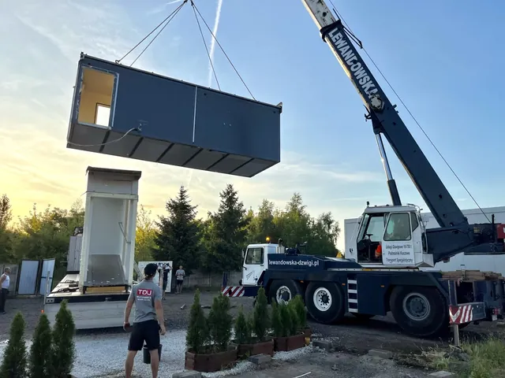
Pianina i ciężkie ładunki
Pianina, fortepiany, antyki, a ładunki nietypowe z dźwigiem do 150 ton.
Polska - Niemcy to nasza specjalność
Stałe kursy do Berlina, Zagłębia Ruhry, Nadrenii, Bawarii i Saksonii. W większości przypadków załadunek i cała trasa zajmują nie więcej niż dobę.
- PoznańBerlin900 - 1100 zł
- WarszawaHannover1600 - 1800 zł
- KrakówMonachium1900 - 2200 zł
- DortmundWrocław1500 - 1700 zł
Średnie ceny w jedną stronę z obecnego cennika. Dokładna cena po wycenie.
Przeprowadzki Niemcy - PolskaRodzinna firma z Poznania, od 2012 roku
Ubezpieczenie w cenie
Standardowo na min. 200 000 zł, przy przeprowadzkach zagranicznych 500 000 zł lub więcej.
Bez przeładunków
Nie przekazujemy rzeczy spedycji ani kurierom. Jedzie jedno auto i ta sama ekipa.
Słowo i termin
Każda ustalona rzecz jest zrobiona, a umówiony termin to dla nas priorytet.
Auta z windą
Bus, kontener z windą i meblowóz z windą lub platformą załadowczą.
Dojazd wszędzie
Do małej wsi i dużego miasta, w Polsce i za granicą.
Płacisz za realną pracę
Pomocnik 50 zł za godzinę, liczone tylko przy załadunku i rozładunku.
Z naszych przeprowadzek
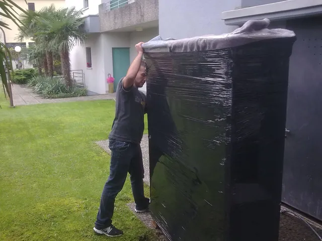
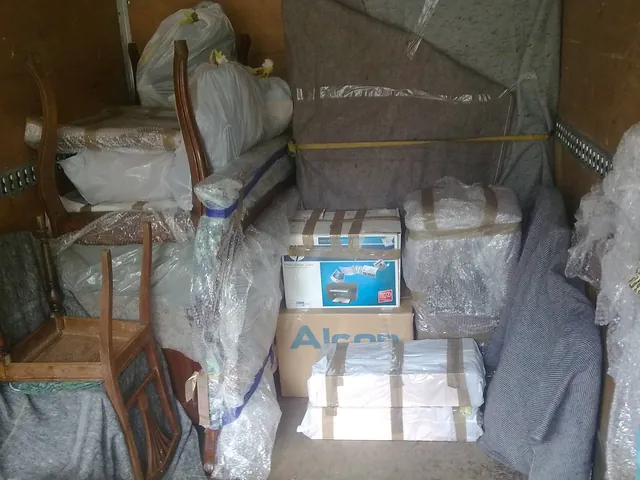
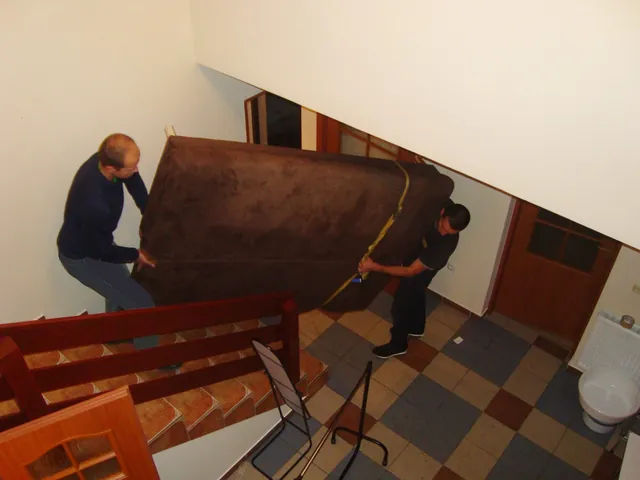
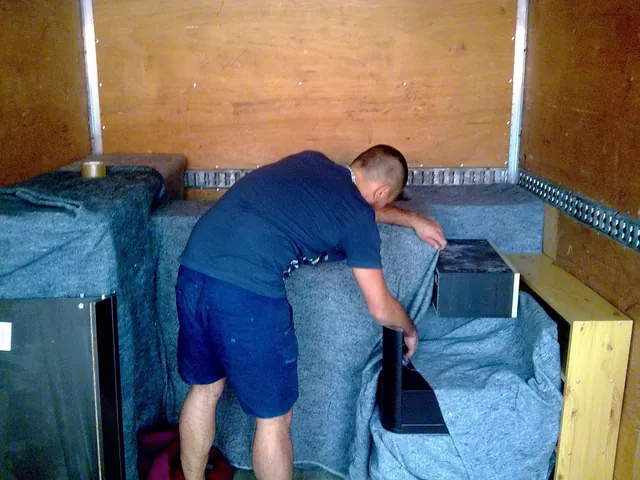

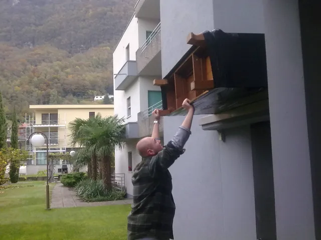
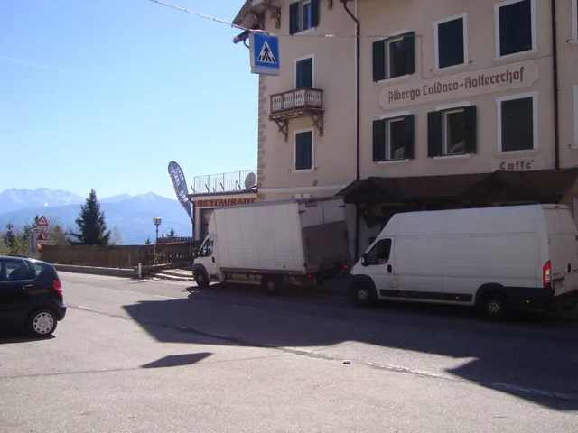

179 opinii w Google
Kilka najnowszych, w całości do przeczytania w wizytówce Google.
Zleciłem transport mebli z Gdyni do Wrocławia. Zależało mi przede wszystkim na tym, żeby meble zostały dobrze zabezpieczone. Wszystko zostało odpowiednio przygotowane do transportu.
Rzetelna i w porządku firma przeprowadzkowa z Poznania. Przeprowadzka zagraniczna do Niemiec przebiegła terminowo oraz według wcześniejszych ustaleń.
Przeprowadzaliśmy się z mieszkania w Poznaniu do domu. Ostatecznie zleciliśmy transport razem z noszeniem i była to bardzo dobra decyzja. Ekipa sprawna, a rzeczy dotarły bez uszkodzeń.
Bezpłatna wycena
Napisz, skąd i dokąd, co jest do przewiezienia i kiedy. Odpowiemy z ceną.
- Telefon
- 608 870 970
- Adres
- Os. Przyjaźni 12/205, 61-686 Poznań
- Godziny
- pon.-pt. 8:00-21:00
sob.-niedz. 8:00-18:00